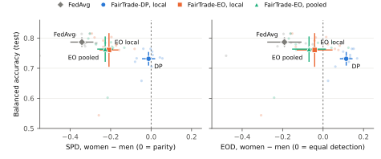
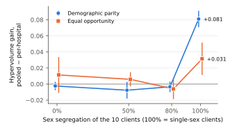

Hospitals cannot pool patient records, so federated learning (FL) trains one model by averaging locally trained updates [3]. A shared model can still treat patient groups unequally, and FL adds a difficulty centralized training lacks: each hospital sees only its own patients, so it may see few or no members of a protected group. FairTrade [2] addresses fairness in FL with a fairness-penalized local objective and multi-objective Bayesian optimization (MOBO) that returns Pareto-optimal accuracy–fairness trade-offs. The question here is whether that machinery survives a real cross-silo medical federation, and what has to change where it does not.
Data. Fed-Heart-Disease [1, 5] has four hospitals with FLamby's fixed train/test split. The model input has 13 features (FLamby drops three UCI columns and one-hot encodes two). Sex is both an input and the sensitive attribute (female = protected). Table 1 shows why this data is a hard test.
| Hospital | Train | Test | Women (train / test) | Disease rate | Cholesterol recorded as 0 |
|---|---|---|---|---|---|
| Cleveland | 199 | 104 | 63 / 34 | 46% | 0% |
| Hungary | 172 | 89 | 50 / 19 | 38% | 0% |
| Switzerland | 30 | 16 | 3 / 0 | 100% | 100% |
| Long Beach VA | 85 | 45 | 2 / 3 | 78% | ≈25% |
Protocol. Unless stated otherwise, results are on the union of the four test sets (254 patients, 56 women; 15 of them sick), each hospital's data normalized as it was in training. Reported metrics: balanced accuracy, statistical parity difference SPD = P(ŷ=1 | F) − P(ŷ=1 | M), and equal opportunity difference EOD = TPRF − TPRM [4]. Undefined metrics (a group absent from a test set) are reported as n/a, never 0. Every configuration runs over 10 seeds (42–51) and reports mean ± 95% t-interval. Comparisons are paired by seed. All preprocessing statistics are fit on training data only. For tuned methods, each hospital's training split is further divided 75/25 into fit and validation parts, and all selection uses validation metrics only.
Reproduction. With FLamby's code and hyperparameters, FedAvg reaches 0.748 ± 0.027 (std) on FLamby's pooled test, identical to the published value. All 100 published per-seed accuracies of the local models (4 models × 5 test sets × 5 seeds) are matched exactly, as are 24 of 25 FedAvg values (one differs by a single patient).
Pitfall 1: pooled-test normalization. FLamby normalizes its pooled test set with statistics of all training data combined, which no FL client has. Evaluated under the per-hospital normalization the model was trained with, the same FedAvg models score 0.705, not 0.748. The same mismatch affects FLamby's per-hospital numbers for the pooled-training baseline (e.g. Long Beach: 0.644 reported vs 0.822 with consistent normalization).
Pitfall 2: accuracy at high-prevalence sites. Sharing only per-hospital counts, sums and sums of squares lets all hospitals normalize with global statistics. This raises balanced accuracy by +0.060 ± 0.019 (10/10 seeds), and imputing the zero-coded missing cholesterol values rules out a "missing = sick" shortcut. A leave-one-hospital-out test shows the gain partly generalizes to unseen hospitals with balanced disease rates (+0.025 Cleveland, +0.029 Hungary, both p < 0.05). At Long Beach (78% sick), however, accuracy rises by 11 points while balanced accuracy falls by 6 (p = 0.004). Accuracy alone is therefore misleading here, and balanced accuracy is used throughout.
| Model (10 seeds, all-centers test) | Balanced accuracy | SPD (F − M) | EOD (F − M) |
|---|---|---|---|
| FedAvg, FLamby settings, per-hospital normalization | 0.704 ± 0.009 | −0.160 ± 0.096 | −0.049 ± 0.121 |
| FedAvg, FLamby settings, federated normalization | 0.764 ± 0.014 | −0.242 ± 0.078 | −0.111 ± 0.102 |
| Pooled training (no privacy; upper bound) | 0.795 ± 0.002 | −0.322 ± 0.003 | −0.156 ± 0.003 |
| Cleveland alone | 0.736 ± 0.006 | −0.199 ± 0.019 | −0.119 ± 0.043 |
Port. Each client minimizes BCE + α · Σg(mg − m)², where mg is
group g's mean predicted risk and m the overall mean. Training uses full-batch local Adam (30 rounds × 10
steps) with size-weighted FedAvg aggregation. MOBO (8 Sobol + 16 qLogNEHVI [6] steps) searches over
(α, learning rate) to maximize validation balanced accuracy and fairness. A unit test confirms that the
ported penalty equals the original DemographicParityLoss numerically. The baseline "FedAvg" in
this section is the same trainer with α = 0 and a validation-tuned learning rate. It reaches 0.787,
higher than FLamby's FedAvg, so every comparison below uses the same trainer for both methods.
Result. FairTrade removes the sex gap in prediction rates: SPD goes from −0.342 to −0.012 ± 0.033, at a cost of 5.5 balanced-accuracy points (0.787 → 0.732). Its Pareto front nearly triples the test hypervolume in the (balanced accuracy, −|SPD|) plane (0.047 → 0.132). But it pushes EOD to +0.114 ± 0.031: sick women are now detected more often than sick men. This is the expected incompatibility of parity and error-rate fairness when base rates differ [4]. With disease rates of 25% and 60%, equal prediction rates can only be reached by over-diagnosing women.
I varied FairTrade along two axes. Notion: demographic parity (DP) or equal opportunity (EO), the same penalty restricted to truly sick patients. Scope: local (FairTrade: each client measures fairness on its own patients) or pooled. In the pooled scope, at the start of each round every client reports per-group (Σ predicted risk, count) under the current global model, four numbers that secure aggregation can protect. Each client then penalizes the gap between the global group means, differentiating its own part and holding the other clients' part fixed. A unit test checks that this equals the penalty on all data combined. Related ideas, deriving fairness from aggregated group statistics, appear in prior fair-FL work such as FairFed [7]. The contribution here is evaluating the idea inside FairTrade on real hospital data. With only about 6 sick women per validation split, thresholded EOD moves about 16 points per patient. Model selection therefore uses soft gaps (differences in mean predicted risk), while test results are reported with the usual thresholded SPD and EOD.

| Variant (10 seeds) | Balanced accuracy | SPD | EOD | HV (bacc, −|SPD|) | HV (bacc, −|EOD|) |
|---|---|---|---|---|---|
| FedAvg (same trainer) | 0.787 ± 0.016 | −0.342 | −0.191 | 0.047 | 0.090 |
| FairTrade-DP, local | 0.732 ± 0.023 | −0.012 | +0.114 | 0.132 | 0.127 |
| FairTrade-DP, pooled | 0.747 ± 0.010 | −0.013 | +0.114 | 0.132 | 0.133 |
| FairTrade-EO, local | 0.761 ± 0.056 | −0.208 | −0.042 | 0.101 | 0.137 |
| FairTrade-EO, pooled | 0.763 ± 0.042 | −0.227 | −0.069 | 0.103 | 0.131 |
Equal opportunity is the better target for this diagnostic task. On the real hospitals, however, pooled totals bring no significant gain. 96% of the women in the fit data are at Cleveland and Hungary (on average 48 and 38 per seed, vs 2.5 at Switzerland and 1.2 at Long Beach), so those two hospitals' local penalties already carry almost all of the fairness signal.
To test the failure mode the pooled penalty targets, I re-split the same fit patients into 10 clients. With probability s a patient goes to a sex-specific client (women to clients 0–1, men to 2–9), otherwise to a random one. Validation and test sets remain the original hospital splits. Every variant gets the same α grid {1, …, 1000} at FedAvg's validation-selected learning rate, which isolates the penalty scope from the tuner. This partition is motivated by real single-sex sites such as veterans' hospitals and women's clinics. Long Beach VA already has a single woman in its fit split.

At s = 1 the local penalty is identically zero, and FairTrade's results equal FedAvg's exactly. The pooled penalty still works: under EO it reduces the detection gap from −0.213 to −0.061 at nearly unchanged balanced accuracy (0.790 → 0.785). The failure is a cliff, not a slope. At s = 0.8 the two women-heavy clients still hold about 10 men between them, which is enough for local penalties to steer the federation. Across all eight comparisons, the pooled penalty is never significantly worse, which makes it a safe default.
requirements.txt, FLamby pinned at edacf54. One command sets
up the environment and data (scripts/setup.sh). Each table above has its own script
(run_fedavg.py, run_baselines.py, run_loho.py, run_fairtrade.py,
compare_fairtrade.py, run_stress.py) and per-seed CSVs in results/; the figures are
generated by make_figures.py. A full run log with every decision is in results/LOG.md, and
10 unit tests run with pytest.